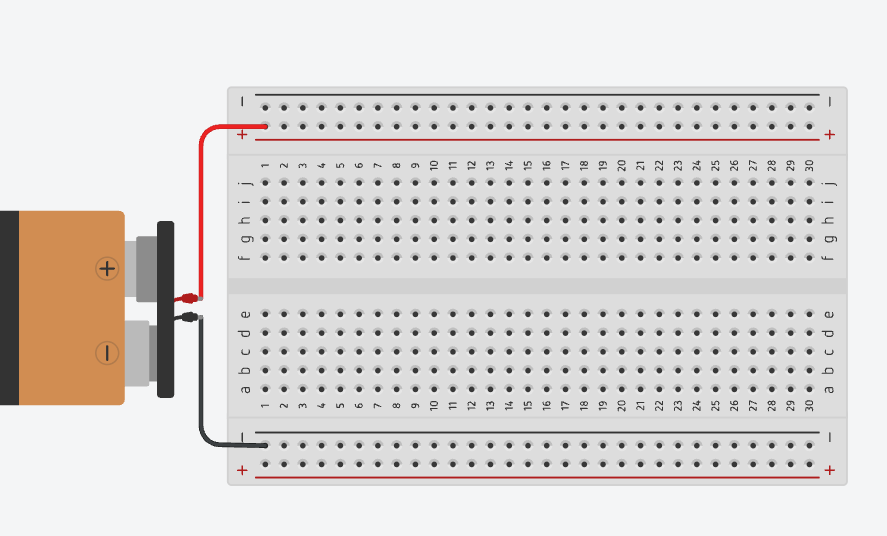
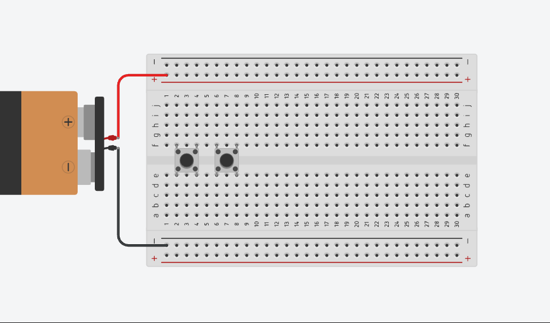
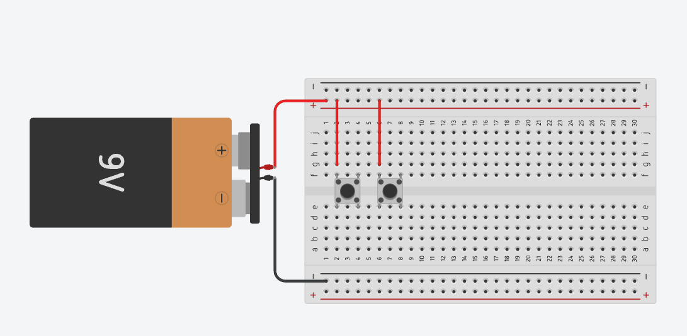
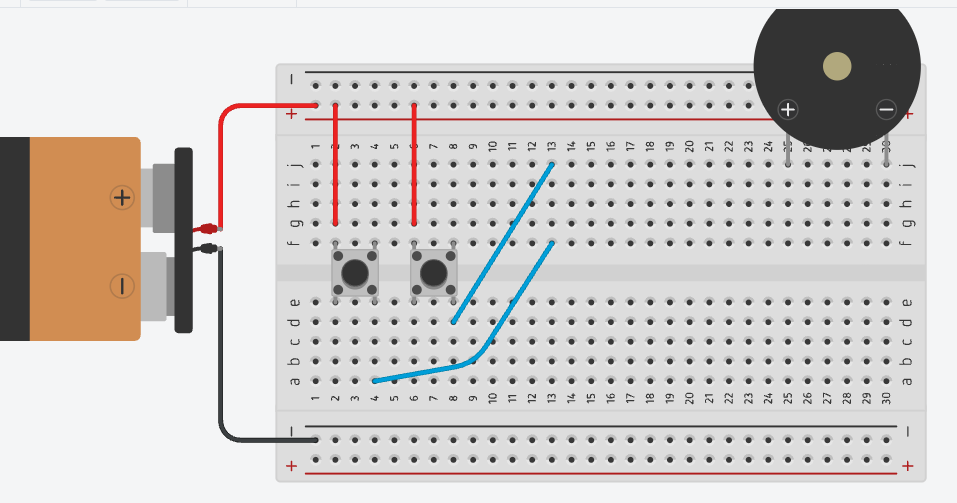
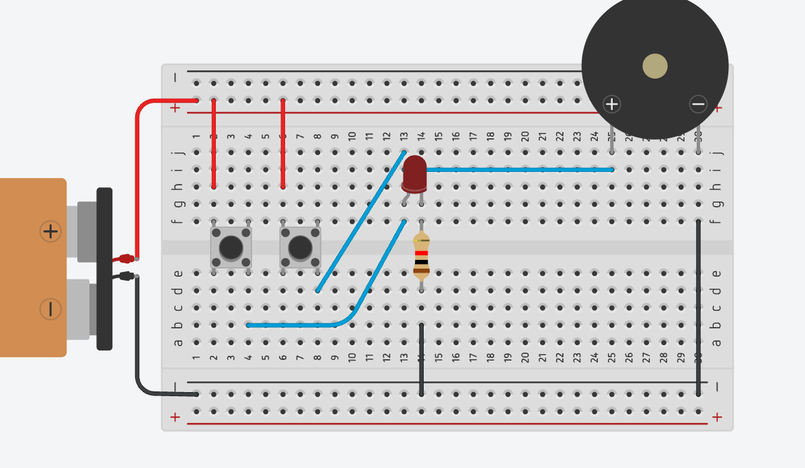

Connecting the Battery to the Breadboard
Connect the battery's positive (+) wire to the top power rail's + line, and the battery's negative (–) wire to the bottom power rail's + line; this rail is used as our ground for the whole build, as shown in the image. Every good alarm needs power before it can do anything dramatic.

Placing the Push Buttons
Place two push buttons across the centre gap of the breadboard (Button 1 in Columns 2 and 4, Button 2 in Columns 6 and 8), leaving one column of space between them, as shown in the image. Meet your two "doors."

Powering the Push Buttons
Connect Button 1's left leg (Column 2) and Button 2's left leg (Column 6) to the top + rail, one red jumper wire each, as shown in the image. Both buttons are now armed and waiting: all they need is a finger.

Creating the Alarm Node
Connect Button 1's right leg (Column 4) to Button 2's right leg (Column 8) with a blue jumper wire, as shown in the image; this joins the two buttons so that pressing either one, not both, sends power onward. Then run a second blue wire from Column 8 up to Column 13, carrying that signal to the top half of the board. Consider this wire the "tattletale": whichever button gets pressed, it reports straight up the line.

Placing the Buzzer
Place the buzzer at the top-right of the breadboard, with its positive (+) leg in Column 25 and its negative (–) leg in Column 29, as shown in the image. This is the loud one of the group: handle with (mild) caution.

Grounding the Buzzer
Connect the buzzer's negative (–) leg (Column 29) to the bottom ground rail with a black jumper wire, as shown in the image. Grounding the negative side first makes it clear that black always means "return path to the battery": no sound yet, we're just being responsible.

Powering the Buzzer
Connect Column 13 (the Alarm Node) to the buzzer's positive (+) leg (Column 25) with a blue jumper wire, as shown in the image. This completes the circuit: press either button, and the buzzer should sound. (If it doesn't, don't worry: even real alarms get tested a few times before opening night.)

Adding the LED
Place the LED so its longer leg (positive) sits in Column 13 (the same node the buzzer already uses) and its shorter leg (negative), next to the flat edge, sits in Column 14, as shown in the image. Your alarm is about to get a little more dramatic.

Adding the Resistor
Place the resistor across the centre gap at Column 14, one lead in Row f, the other in Row e, as shown in the image. A resistor has no positive or negative side, so it can go in either way round: it's the bodyguard standing between your LED and too much current.

Grounding the LED
Connect Column 14 to the bottom ground rail with a black jumper wire, as shown in the image. This completes the LED's circuit: pressing either button now lights the LED and sounds the buzzer together.


You're Done!
That's the full build. Go ahead: press Button 1, then Button 2, then try sneaking past with neither pressed. If light and sound show up right on cue, your Any-Door Alarm is officially open for business.